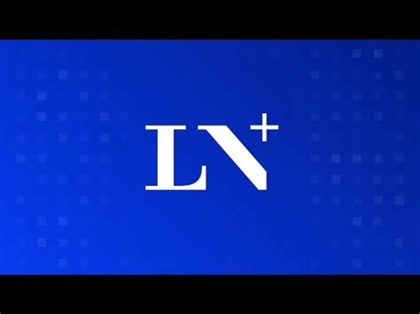
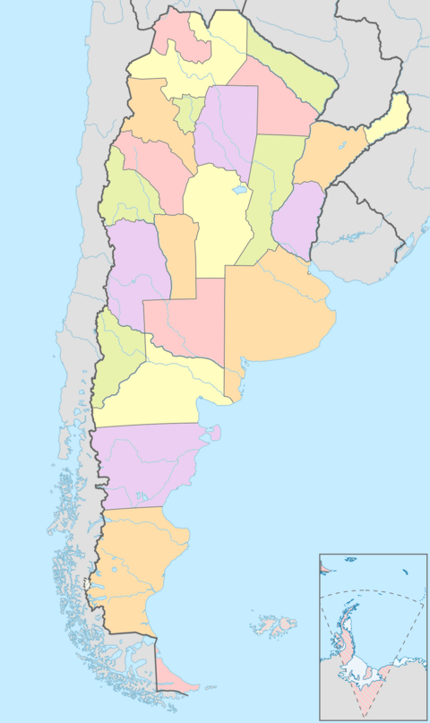
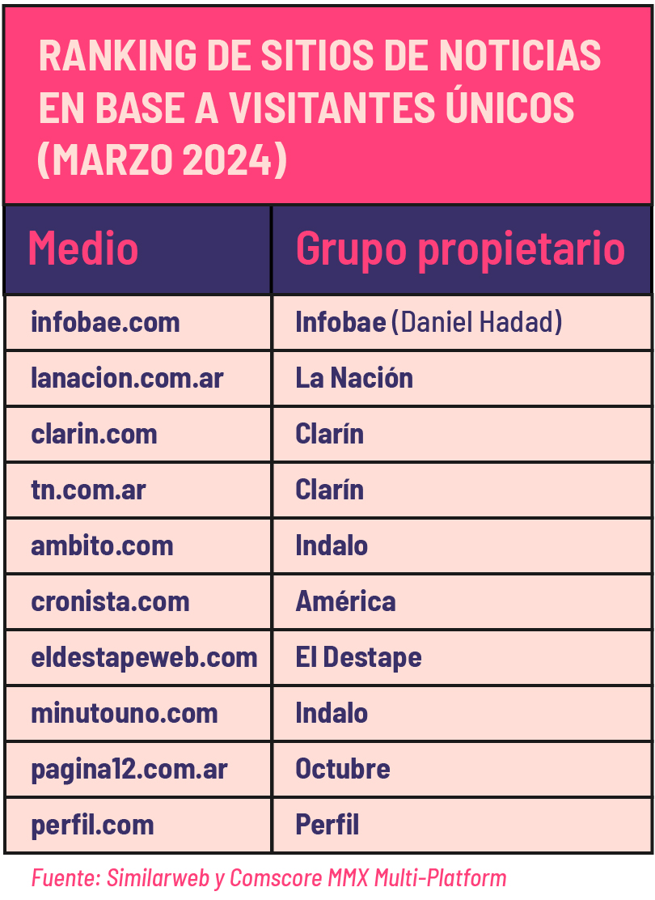

La Nacion posee varios diarios de gran circulacion en Argentina, incluyendo su diario llamado "La Nacion". Siendo uno de los mas leidos del pais.
Ademas, cuenta con ediciones digitales y aplicaciones moviles que le permiten llegar a un publico mas amplio y diversificado.
Television
La Nacion tambien tiene presencia en el medio televisivo, con su canal de noticias llamado "La Nacion+" que ofrece una cobertura amplia de la actualidad nacional e internacional.

Radio
En el ambito radial, La Nacion cuenta con estaciones de radio que transmiten programas de noticias, opinion y entretenimiento, llegando a diferentes segmentos de la audiencia.
El nombre de dicha radio es "La Nacion Radio".
Digital
La Nacion cuenta con una fuerte presencia en el entorno digital, ofreciendo noticias y contenido a traves de su sitio web y redes sociales.
Con el nombre "La Nacion Digital", ofrece una experiencia adaptada a las necesidades de los usuarios en el mundo digital.
Provincias o regiones donde hay mas presencia de La Nacion
La Nacion tiene una fuerte presencia en la Ciudad de Buenos Aires y en las principales provincias del pais, como Cordoba, Mendoza y Santa Fe.
Ademas, cuenta con corresponsales y oficinas en diferentes regiones, lo que le permite cubrir noticias locales y nacionales de manera efectiva.
Su alcance geografico le permite llegar a una audiencia mas amplia y diversa.

Que tipo de contenido produce La Nacion
La Nacion produce una amplia variedad de contenido, incluyendo noticias, reportajes, opinion y entretenimiento. Su enfoque en la calidad y la investigacion le permite ofrecer una cobertura exhaustiva de los temas mas relevantes para la sociedad.
Ademas, cuenta con secciones especializadas en economia, politica, cultura y deportes, lo que le permite atender a diferentes intereses y necesidades de su audiencia.
La Nacion se esfuerza por mantenerse a la vanguardia en la produccion de contenido, utilizando nuevas tecnologias y formatos para llegar a su audiencia de manera mas efectiva.
Con que otros grupos compite La Nacion
La Nacion compite con otros medios de comunicacion de gran envergadura, como Clarin, Infobae y La Voz del Interior. Estos grupos tambien cuentan con una amplia cobertura informativa y una fuerte presencia en el mercado.
Ademas, enfrenta la competencia de medios digitales y redes sociales, que han cambiado la forma en que los ciudadanos consumen noticias e informacion.
La Nacion se diferencia por su enfoque en la calidad del periodismo y la investigacion, buscando ofrecer un valor agregado a su audiencia en un panorama mediatico cada vez mas saturado.

Funciona en un monopolio u oligopolio
La Nacion funciona como un oligopolio significa que comparte el mercado con un pequeño número de competidores, lo que le permite tener un control significativo sobre la oferta informativa y las condiciones del mercado.
Esto le permite influir en la agenda publica y en la opinion de los ciudadanos, al mismo tiempo que limita la diversidad de voces y perspectivas en el panorama mediatico.
En este contexto, La Nacion busca diferenciarse a través de la calidad de su contenido y su compromiso con el periodismo de investigacion.
Que ventajas y desventajas trae su concentracion para la sociedad
Ventajas
La concentracion de medios como La Nacion puede traer varias ventajas, como:
Mayor calidad en la produccion de contenido
Acceso a recursos y tecnologias avanzadas
Capacidad para influir en la agenda publica
Desventajas
La concentracion de medios como La Nacion puede traer varias desventajas, como:
Limitacion en la diversidad de voces y perspectivas
Riesgo de sesgo en la cobertura informativa
Concentracion de poder en un pequeño numero de actores